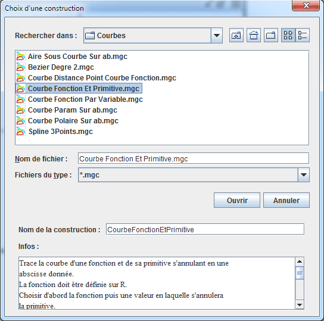
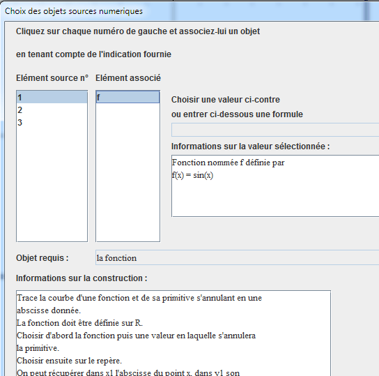
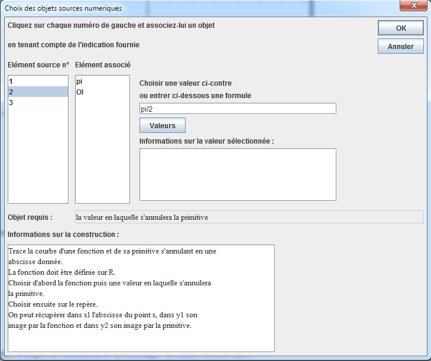
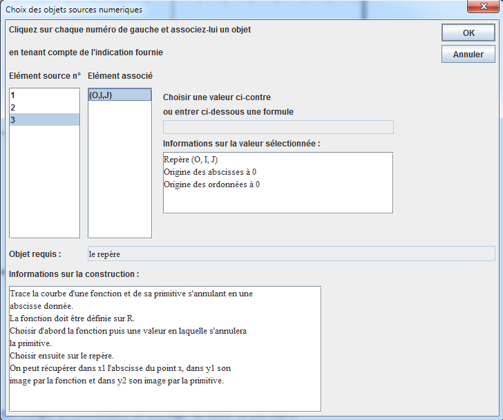
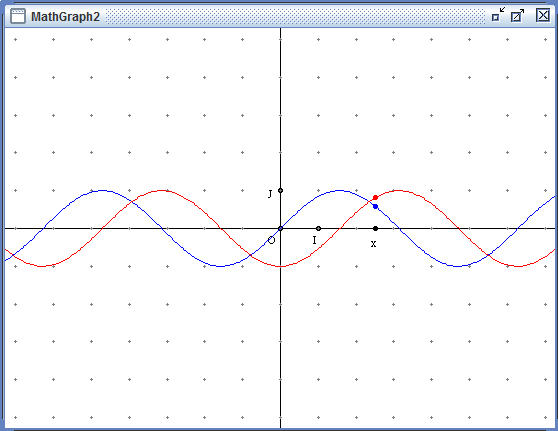

Les constructions sont une des fonctionnalités les plus puissantes de MathGraph32.
Les constructions sont des sortes de figures que l’on peut incorporer dans d’autres figures.
Une construction utilise des objets de la figure dans laquelle on l’incorpore, appelés objets sources.
Elle utilise de façon interne des objets (appelés objets intermédiaires) qui serviront à créer de nouveaux objets (appelés objets finaux) qui eux pourront être utilisés par les objets que l’on créera après dans la figure.
Les objets sources et finaux peuvent être des objets graphiques ou de type calcul. Les repères sont considérés comme des objets numériques dans la version java.
Les objets sources numériques peuvent être :
Les objets graphiques sources peuvent être :
Pour être valide, une construction doit respecter la règle suivante:
Les objets finaux ne doivent être construits qu’avec des objets construits uniquement avec les objets sources sources et chacun des objets sources doit servir au moins une fois pour créer un objet final.
Une seule exception à cette règle : Si les objets finaux sont construits en utilisant les objets sources et une variable qui n’est pas un objet source, la construction est acceptée et la variable utilisée fera partie des objets intermédiaires.
Les constructions sont enregistrées dans des fichiers dont l’extension est mgc (un tel fichier s’appellera par exemple Tangentes.mgc).
On charge une construction dans une figure à l’aide du menu Construction >> Incorporer une construction dans la figure depuis un fichier.
On utilise une construction déjà chargée dans la figure à l’aide du menu Construction >> Implémenter une construction de la figure.
On peut aussi utiliser une construction sans la charger dans la figure à l'aide des menus Construction >> Implémenter une construction depuis un fichier.
On enregistre une construction sur un disque ou tout autre support d’enregistrement à l’aide du menu Construction >> Enregistrer une construction de la figure dans un fichier.
Lorsqu’une construction a été implémentée dans une figure, il est possible d’obtenir que tous les objets intermédiaires redeviennent des objets normaux en utilisant le menu Construction >> Fusionner les constructions de la figure.
Comment définir une construction.
Pour définir une construction, on commence par choisir les objets sources numériques et graphiques.
Il est imortant de comprendre que, lors de l'implémentation de la construction, les objets sources numériques seront ceux qui devront être désignes en premier.
Le choix des objets sources se fait via le menu Constructions - Choix des éléments sources puis numériques ou graphiques.
Une fois les objets sources choisis on choisit les objets finaux numériques et graphiques. Il n'est possible de choisir que des objets exclusivement construits avec les objets sources spécifiés.
Le choix des objets finaux se fait via le menu Constructions - Choix des éléments finaux puis numériques ou graphiques.
Il est possible d'annuler les choix des éléments sources et finaux via le menu Constructions - Réinitialiser la construction en cours.
Comment implémenter une construction.
Si la construction comporte à la fois des objets sources graphiques et non graphiques, ce seront les objets sources non graphiques qui seront demandés en premier lors de l'implémentation.
A noter : Si une construction utilise un seul objet non graphique et que c'est un repère, et si la figure dans laquelle on doit l'implémenter ne comporte qu'un seul repère alors ce repère est automatiquement choisi comme objet source pour la construction et la boîte de dialogue de choix des objets sources numériques n'apparaît pas.
Nous allons illustrer l'implémentation d'une construction sur un exemple en utilisant la construction prédéfinie nommée CourbeFonctionEtPrimitive qui est fournie avec MathGraph32.
Commencez par créer une figure vierge munie d'un repère puis une fonction f a l'aide du raccourci clavier Ctrl + F ou de l'icône  (par exemple f(x)=sin(x)). Ne cochez pas la case Tracer courbe.
(par exemple f(x)=sin(x)). Ne cochez pas la case Tracer courbe.
Nous commençons par utiliser le menu Constructions - Implementer une construction prédéfinie.
Une boîte de dialogue s'ouvre . Double-cliquez sur le dossier nommé Courbes.
Remarquons qu'en cliquant sur une construction (dont l'extension est mgc) la boîte de dialogue nous informe sur les fonctions de cette construction comme ci-dessous.
Cliquez sur le nom de la construction puis sur le bouton Ouvrir.
Une boîte de dialogue s'ouvre qui va vous permettre de choisir les objets sources.
Le premier objet source (n°1) est la fonction.
Choisissez-la comme ci-dessous.

Le deuxième objet source est la valeur qui doit annuler la primitive.
Nous pouvons soit cliquer sur une valeur déjà définie soit entrer directement une formule comme ci-dessous.

Le troisième objet source est le repère.
Choisissons-le comme ci-dessous.

Il n'y a plus qu'à valider.
Comme notre construction n'attend pas d'objets sources graphiques, elle est tout de suite implémentée.
Voici par exemple le résultat :

En appuyant sur la touche F6 (qui sert à voir les objets numériques créés) vous verrez que la constructions a créé un calcul nommé x qui contient l'abscisse du point lié à l'axe des abscisses, un calcul nommé y qui contient f(x) et un calcul nommé y1 qui contient l'image approchée de x par la primitive.
Created with the Personal Edition of HelpNDoc: Full featured Documentation generator